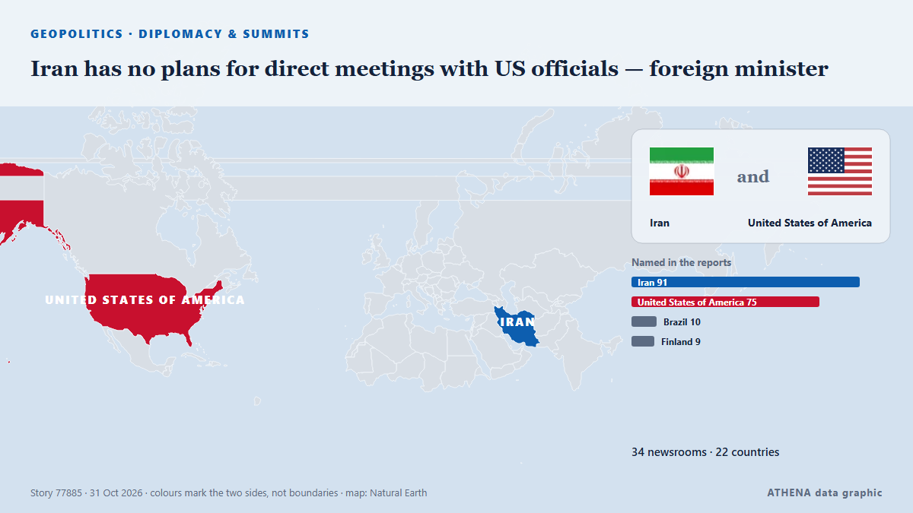

Iran has no plans for direct meetings with US officials — foreign minister

The American side’s attempt to open the door to dialogue and understanding more broadly is a positive step, Abbas Araghchi said. from TASS (English)
Reported independently by 35 outlets in 22 countries since 28 Oct, first by The Korea Times; coverage is fading. ATHENA rates the risk elevated (5.1/10), driven mainly by the severity of the harm described and its geographic and sector reach. Confidence is 92% (high), with 35 independent outlets corroborating it and an average source reliability of 76%. Newsrooms by country: United States (9), Iran (5), Russia (5). Coverage: 28 Oct to 31 Oct, 87 hours.
Why it matters: Security and diplomatic developments can shift alliances, trade and markets well beyond the countries directly involved.
What changed: 39 new reports from 28 newsrooms in the 24 hours to 31 Oct.
First reported as: No more superpowers
At a glance
Selected, scored and written by ATHENA's published methodology. No editor intervenes in individual events. How this is produced ›
| 28 Oct 00:12 UTC | 1 |
|---|---|
| 28 Oct 06:12 UTC | 0 |
| 28 Oct 12:12 UTC | 2 |
| 28 Oct 18:12 UTC | 2 |
| 29 Oct 00:12 UTC | 0 |
| 29 Oct 06:12 UTC | 0 |
| 29 Oct 12:12 UTC | 2 |
| 29 Oct 18:12 UTC | 2 |
| 30 Oct 00:12 UTC | 1 |
| 30 Oct 06:12 UTC | 3 |
| 30 Oct 12:12 UTC | 4 |
| 30 Oct 18:12 UTC | 5 |
| 31 Oct 00:12 UTC | 2 |
| 31 Oct 06:12 UTC | 0 |
| 31 Oct 12:12 UTC | 30 |
| 31 Oct 18:12 UTC | 2 |
| 31 Oct 15:17 UTC | 3.9 |
|---|---|
| 31 Oct 15:45 UTC | 5.8 |
| 31 Oct 18:51 UTC | 5.4 |
| 31 Oct 18:51 UTC | 5.1 |
Why these numbers
Importance
Risk
Confidence
The reporting — who reported it, and when
headline as published · opens the original- The Korea Times · South KoreaNo more superpowers
- Anadolu Agency (English) · TurkeyCanadian advocates, academics urge reassessment of refused study permits for Palestinian students from Gaza
- The Intercept · United StatesThe Incredible Shrinking Superpower
- IRNA (English) · IranNew Iranian ambassador to Greece meets FM Araghchi ahead of mission
- Express Tribune · PakistanIranian president says regional countries can ensure security without US involvement
- US State Department press releases · United StatesSecretary Rubio’s Meeting with Finnish Foreign Minister Valtonen
- US State Department press releases · United StatesSecretary of State Marco Rubio and Finnish Foreign Minister Elina Valtonen at a Memorandum of Understanding Signing Ceremony on a Critical Minerals Framework and a Technology Prosperity Deal
- The Hill · United StatesWashington state secretary of state fires back at DOJ over noncitizen voter claim: 'Profoundly disappointing'
- Middle East Eye · INTIran's Qalibaf says progress only possible when Tehran's seven conditions are met
- Mehr News (English) · IranNo progress without accepting Iran’s seven conditions
- The Korea Times · South KoreaSeoul expects progress on OPCON transfer at early 2027 defense talks with US
- The Rio Times · BrazilBrazil’s Vieira Expected at Atlanta G20
- The Korea Times · South KoreaSeoul expects substantive progress on OPCON transfer at early 2027 defense talks with US
- Arab News · Saudi ArabiaSaudi FM takes part in G20 foreign ministers meeting in Atlanta
- Arab News · Saudi ArabiaSemipalatinsk nuclear treaty must be extended to include Iran, the Gulf and wider Middle East
- TRT World · TurkeyG20 foreign ministers meet in US amid economic, security concerns
- US State Department press releases · United StatesSecretary of State Marco Rubio at a Plenary Session on Geopolitical Issues
- TASS (English) · RussiaLavrov, top Japanese diplomat hold talks on sidelines of G20 meeting in Atlanta
- Ukrainska Pravda (English) · UkrainePolish foreign minister says he has a message for Lavrov at G20 meeting
- TRT World · TurkeyTürkiye's Fidan attends G20 meeting in US, holds talks with Japanese, Indonesian counterparts
- US State Department press releases · United StatesSecretary Rubio’s Meeting with Turkish Foreign Minister Fidan
- US State Department press releases · United StatesSecretary of State Marco Rubio at the G20 Foreign Ministers’ Meeting Welcome Reception
- The Hindu · IndiaJaishankar, Anita Anand agree that Modi’s Canada visit in December will be ‘another building block’
- Mehr News (English) · IranIran slams German chancellor for backing US-Israel aggression
- Mehr News (English) · IranIran has no plan to meet US officials: FM
- TASS (English) · RussiaIran agrees to reopen Strait of Hormuz within two days if deal reached with US
- APA (English) · AzerbaijanNew proposal shortens implementation of Iran’s plan to open Hormuz to 2 days: Araghchi
- The Jerusalem Post · IsraelAraghchi says Vance's letter 'positive step' toward opening dialogue between Iran, US
- Al Jazeera English · QatarIran FM says US outreach a ‘positive step’ as delegation in Qatar for talks
- TASS (English) · RussiaIran demands reduction in US forces in region as condition for settlement — top diplomat
- APA (English) · AzerbaijanIran does not rule out an outbreak of war: Araghchi
- TASS (English) · RussiaIran has no plans for direct meetings with US officials — foreign minister
- TASS (English) · RussiaIran remains committed to Nuclear Non-Proliferation Treaty — foreign minister
- Free Malaysia Today · MalaysiaIran has no plans for talks with US, says foreign minister
- Vanguard · NigeriaIran has no plans for talks with US — Foreign minister
- Courthouse News · United StatesG20 foreign ministers in Atlanta meeting head to an ending without consensus on key issues
- PBS NewsHour · United StatesG20 foreign ministers end Atlanta meeting without consensus on key issues
- Business Recorder · PakistanIran has no plans for talks with US: foreign minister
- IRNA (English) · IranUS offer to open dialogue a 'positive step', but no plans to meet Americans at present: Araghchi
- AzerNews · AzerbaijanUS officials may join Iran's team for talks in Doha